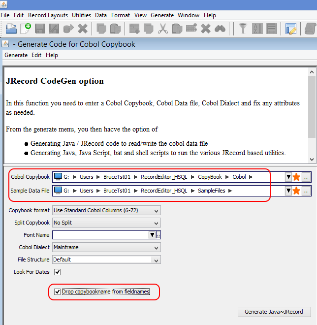
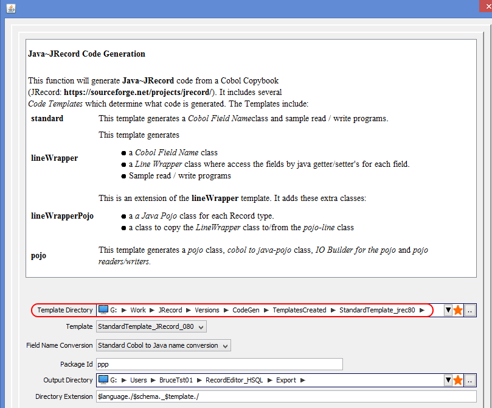

Template Description
This Zip file contains a CodeGen Template for JRecord version 0.80.
This will allow you to generate JRecord version 0.80 code in:
- RecordEditor / ReCsveditor
- JRecord CodeGen
Installation
- Create a CodeGen Template directory.
- Unzip (or copy) the StandardTemplate_JRecord_080 directory to the
directory from step 1.
RecordEditor / ReCsvEditor usage
In RecordEditor or ReCsvEditor
- Select Generate >.>.>. Java JRecord Code for Cobol
- Enter the Cobol Copybook and optionally the Cobol Data file. Also Select
the Drop copybook names from field names option.

- Enter the StandardTemplate_JRecord_080 directory in the template directory field.

- Hit the next button to generate the template.
Standalone Codegen usage
This Template can be used in the Standalone JRecord-CodeGen program
java -jar ../../lib/JRecordCodeGen.jar ^
-TemplateDirectory StandardTemplate_jrec80 ^
-Template StandardTemplate_JRecord_080 ^
-Schema DTAR027.cbl ^
-FileOrganisation FixedWidth ^
-font cp037 ^
-outputDirectory DTAR027_xBasic